Peanut Butter Banana Split on a Stick
Peanut Butter Banana Split on a Stick
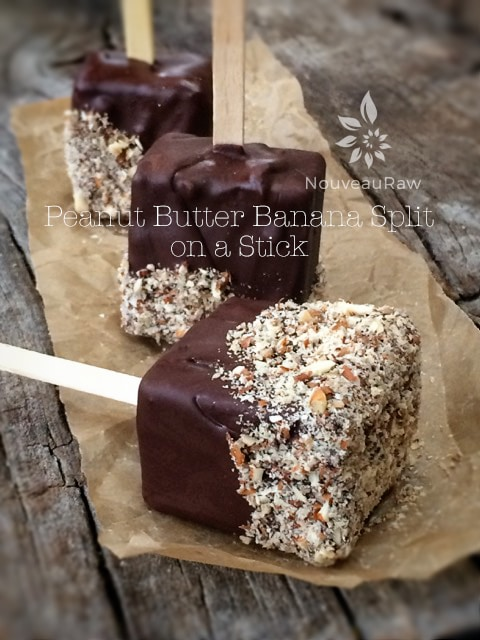
~ raw, vegan, gluten-free ~
What a treat, peanut butter cookies, banana ice cream, chocolate – individually each is amazing all on its own… together they are like a finely tuned orchestra, and the taste buds are the backup choir singing its praises.
I almost forgot about sharing this recipe until today when I found Bob enjoying one as he sat down to rest for a few before returning to some hard work on an irrigation job. There isn’t a thing that man can’t do. He amazes me daily. :)
We did things a little backward this Spring. We visited a nursery and bought oodles of trees to plant in our yard, mostly up near the house. Without thinking things through, we just loaded up the truck (several times *cough*) and brought them home to plant. Where? We had no idea… they were just too pretty to pass up.
I am a designer at heart so moving and rearranging all the new trees brought me such delight. A young man helped us with part of the process, bless his heart, I think I drove him crazy. He carried the trees (let’s not forget to mention that they were heavy and around 10′ tall) to the places where I thought I wanted them to live.
I would run to the left side of the patio, “Looks good from here.”… I ran to the right side…”Good from here too!”…. (he thought I was done)…”Wait, let me go up on the porch and see what it looks like from there. Move it a little to the left. Perfect.”…. “Just about done, let me see what it looks like from inside the house, be right back.” Nope! Gotta move it somewhere else, it blocks a huge chunk of the view.” lol Imagine going through all that with over 20 trees. :) What?! These trees will be around longer than I ever will, they need to be in the right place.
So, within days the new plants and trees were in the ground. That is when it hit us… WATER! DOH! They need water! There aren’t any water lines that will reach them. Bob had to remap the irrigation system so water could reach all the new greenery. We decided that paying for the trees was the least expensive and easiest part of the whole ordeal. We didn’t learn our lesson after that initial purchase either…. no; it took a few more truckloads of trees before it sunk in. Well, shoot, I really got off track here. What did that have to do with today’s dessert? Not a darn-tootin’ thing. Other than the fact that I can confirm that I find my husband to be totally amazing and it blesses me to make such delicious treats for him to enjoy. :)
If you have a peanut allergy, you could always use any other nut or seed butter in its place. I for one, love peanut butter but only indulge in it occasionally. It’s one of those foods that can get away from me and devour it far too easily. Can I get an “amen”?! I hope you enjoy these as much as we do. Blessings, amie sue
Peanut butter cookie:
- 1 cup raw almonds, soaked & dehydrated
- 1/2 cup natural peanut butter
- 1 cup Medjool dates, pitted
- 1 tsp vanilla extract
- 1/8 – 1/4 tsp sea salt
Banana ice cream:
- 1 lb frozen bananas, diced
- 1 tsp vanilla extract
- 2-4 Tbsp water
Chocolate coating:
Topping:
- Crushed peanuts or almonds
Preparation:
Peanut butter cookie:
- Note ~ you will be making the peanut butter cookie layer twice. Don’t try doubling the recipe upfront because it will be too taxing on your machine.
- Place the almonds in a food processor, fitted with the “S” blade, and process into a very small crumble size
- Add the peanut butter, dates, vanilla, and salt and process until the dough comes together. Stop and check the dough, it should hold together when you squeeze some into a ball shape. If the dates you used are really dry, you may need to add a few Tbsp of water to the batter.
- Line your 8×8 pan with plastic wrap for the ease of removing when the bars are ready to cut.
- Spread the cookie dough out, evenly and firmly.
- Repeat this process one more time. This will make the top layer. Once it is done, place it in a bowl and set it aside.
Banana ice cream:
- Place the frozen banana slices, vanilla, and water in a high-power blender or food processor. I used a blender.
- Process until the bananas break down to a smooth and fluffy soft-serve ice cream state.
- Pour over the bottom layer of the peanut butter cookie batter. Place in the freezer.
Chocolate coating:
- Place the coconut oil in the dehydrator or a bowl filled with hot water to melt it. In the meantime…
- Place the cacao powder, maple syrup, vanilla, and salt into a mixing bowl and start to whisk together. It will be too thick.
- Add in the coconut oil in stages, whisking as you go. Soon it will all come together nice and smooth.
- I added the salt to bring down the bitterness of the cacao without having to increase the agave. I don’t recommend using a blender. I lost a batch when it seized
Assembly:
- Once the banana ice cream is hard (this can take several hours depending on your freezer temp and how full it is), place the top layer of the peanut butter cookie dough on top, just like you did on the bottom layer.
- Return the freezer and let it get good and cold before cutting into ice cream sandwich bars.
- Once frozen, remove the frozen treat from the pan and place it on a cutting board. Cut into desired shapes and sizes.
- Slide a pop cycle stick into each bar and dip into chocolate. Return to the freezer while you make the chocolate. See the photos below for more details.
- Wrap each one individually and return it to the freezer.
To create this… do the following.
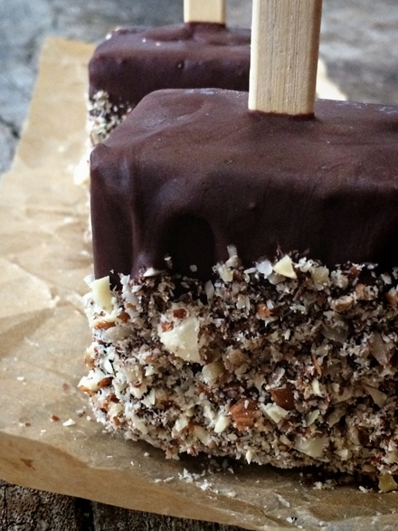
Press the peanut butter cookie layer on the bottom of the pan. Then smooth the banana ice cream over the top and slide into the freezer until solid.
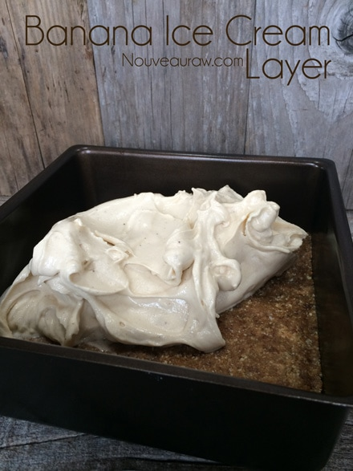
Remove from freezer and place the top layer of the peanut butter cookie on the banana ice cream. Return to freeze for a short stint to get it all good and firm.
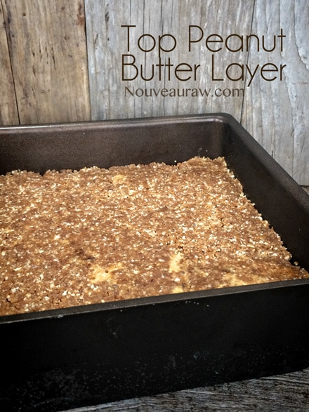
Remove from the pan and have your chocolate sauce ready for dipping.
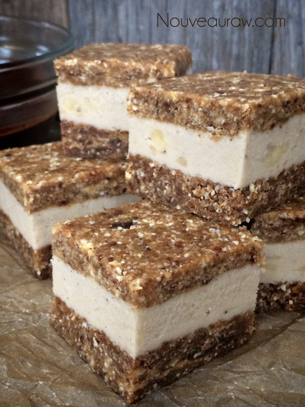
Slide pop cycle sticks into the banana ice cream.
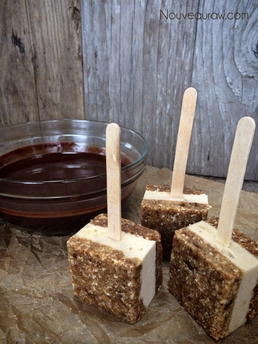
Time for a chocolate bath. Use a spoon to ladle chocolate around the top.
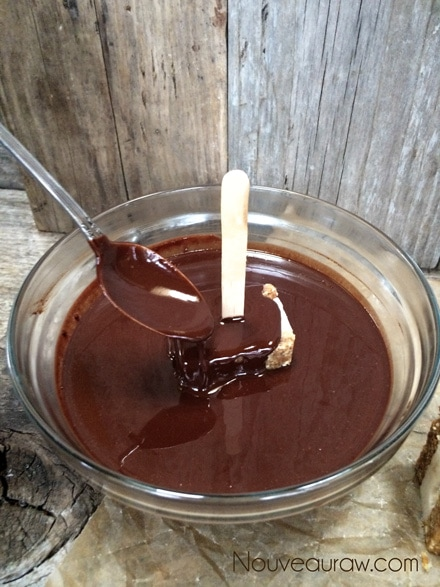
Lift out and let excess chocolate drip from the bar into the bowl.
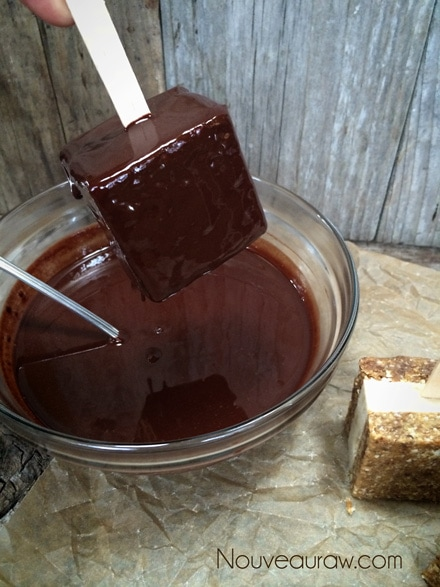
While the chocolate is still soft, place in the almonds and with your fingers press the almonds up around the sides. How far up is your call. Because the bars are frozen, the chocolate will firm up quite quickly, so don’t dilly dally or else it will be too dry to get the almonds to stick.
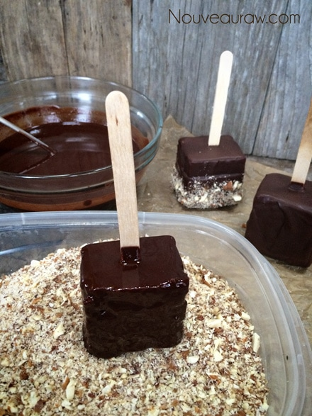
Place in the freezer on a cookie sheet to firm up again. Decide on how you want to store them in the freezer. I wrapped each one individually two different ways. Then I placed them inside of a freezer safe container for extra protection. Below, I used some natural wax bags to place them in, then tied it off with twine.
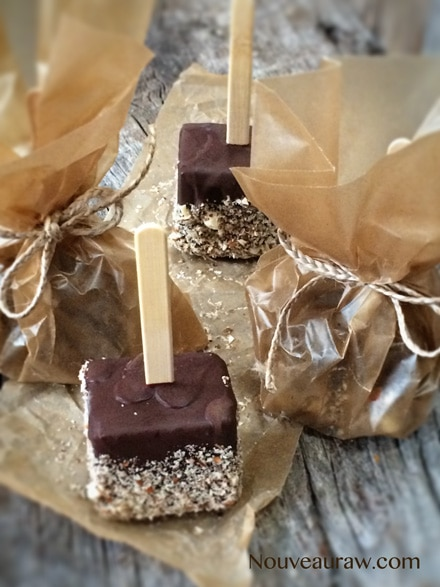
Another quick and easy way is to tear off a piece of Press and Seal wrap, gathering it up around the stick. It sticks to itself, but I added the twine for a rustic flare.
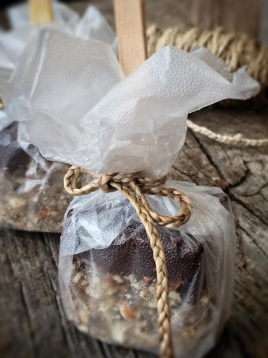
© AmieSue.com